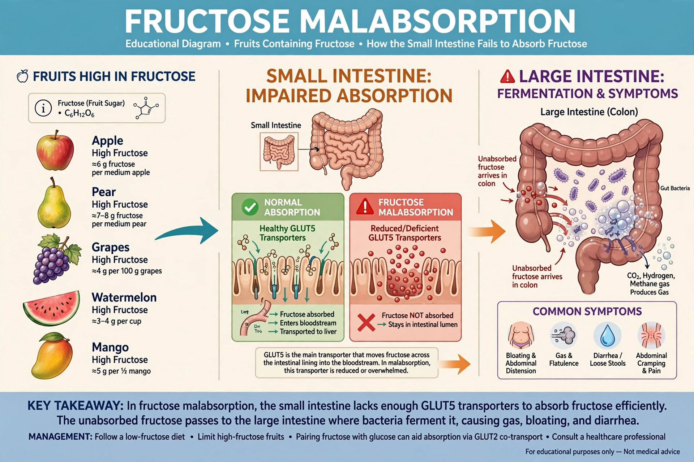

Fructose malabsorption, formerly called dietary fructose intolerance, is a digestive disorder in which absorption of fructose by the small intestine is impaired, because of limited capacity of the GLUT5 fructose transporter. Unabsorbed fructose is fermented by gut bacteria, producing gas and drawing water into the bowel.

Fructose malabsorptionSymptoms include bloating, flatulence, abdominal pain, diarrhoea or constipation, and sometimes nausea and mood or fatigue complaints. Diagnosis commonly uses a fructose hydrogen breath test, though its reliability is debated. It must be distinguished from hereditary fructose intolerance, a serious genetic disorder of fructose metabolism.
Treatment is dietary: reducing free fructose and fructans, balancing fructose with glucose, and following a low-FODMAP diet under dietetic guidance. It is related to other carbohydrate malabsorption conditions such as lactose intolerance.